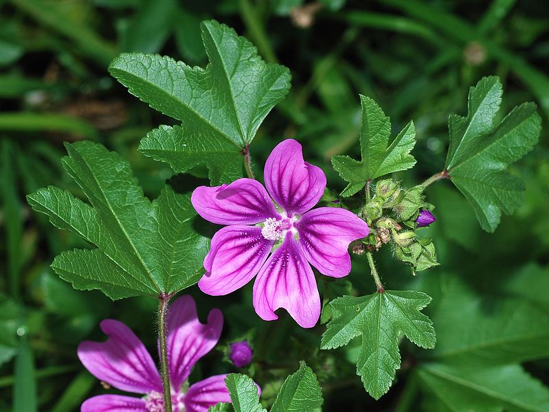

Ayuntamiento de Senés
JARDIN BOTANICO DE ESPECIES AUTOCTONAS DE SENES

Malva sylvestris

La malva (Malva sylvestris) es una planta herbácea perenne muy común en el ámbito mediterráneo, especialmente en terrenos alterados, bordes de caminos y zonas cercanas a asentamientos humanos. Se caracteriza por su facilidad de crecimiento y su vistosa floración.
Presenta tallos erectos o ligeramente extendidos, con hojas redondeadas y lobuladas, de textura suave. Sus flores son de color rosado o violeta, con nervaduras más oscuras, y aparecen de forma abundante durante la época de floración, aportando un notable valor ornamental.
La malva se distribuye ampliamente por Europa, Asia y el norte de África, siendo especialmente abundante en la región mediterránea. Crece de forma espontánea en terrenos removidos, cunetas, solares y campos abandonados.
En el entorno de Senés, es frecuente en zonas próximas a caminos y áreas habitadas, formando parte de la vegetación ruderal.
La malva es una planta muy valorada por sus propiedades medicinales, especialmente por su acción emoliente, antiinflamatoria y suavizante. Se ha utilizado tradicionalmente en infusiones para aliviar afecciones respiratorias y digestivas.
También se emplea en aplicaciones externas para tratar irritaciones de la piel, gracias a su contenido en mucílagos.
La malva simboliza la suavidad y la protección, debido a sus propiedades calmantes. También se asocia con la sencillez y la cercanía, al ser una planta muy común en entornos humanizados.
Su floración vistosa representa la belleza de las plantas silvestres más humildes.
En Senés, la malva era conocida por sus usos medicinales, especialmente en infusiones para aliviar la tos, irritaciones de garganta, laxante, picaduras, faringitis, piorrea y forúnculos..
Tambie se utilizaba en la belleza, para dejar la piel límpia y tersa. Los baños de hojas de malva eran calmantes. con hojas y flores frescas se preparaban cremas de noche que suavizaba y daba tersura al cutis.
La malva florece entre primavera y verano, produciendo flores abundantes que aportan color al paisaje y atraen a insectos polinizadores.
La malva ha sido utilizada desde la antigüedad como planta medicinal. Su nombre proviene del latín “mollis”, que hace referencia a su carácter suave y a sus propiedades calmantes.
Es una de las plantas silvestres más reconocibles por sus flores y su presencia cercana al ser humano.